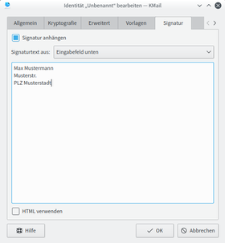

Mailoptionen
Dieser Artikel wurde für die folgenden Ubuntu-Versionen getestet:
Ubuntu 16.04 Xenial Xerus
Ubuntu 14.04 Trusty Tahr
KMail verfügt beim Erstellen einer neuen E-Mail über vielseitige Versand- und Formatierungsmöglichkeiten, sowie hilfreiche Funktionen, die das Schreiben einer Nachricht erleichtern. Die wichtigsten Optionen, deren Einrichtung und Verwendung werden in den folgenden Abschnitten genauer beschrieben.
Versandoptionen und Formatierungen¶
Über den Menüeintrag "Optionen" stehen verschiedene Möglichkeiten zum Versand der Nachricht zur Verfügung. Zum einen kann man die Nachricht als "Dringend" markieren oder eine "Empfangsbestätigung anfordern". Zum anderen kann man über den entsprechenden Menüeintrag bzw. über die Schaltflächen in der Werkzeugleiste die E-Mail signieren oder verschlüsseln (Informationen zur Einrichtung im Artikel: KMail/Verschlüsselung). Standardmäßig werden reine Textnachrichten erstellt. Möchte man den Text formatieren, wählt man im Optionsmenü den Eintrag "Formatierung (HTML)" bzw. "Bearbeiten in Rich-Text". Dann stehen grundlegende und aus der Textverarbeitung bekannte Formatierungen wie bsp. Schriftart, -größe oder -farbe zur Auswahl. Zusätzlich kann der automatische Zeilenumbruch und die automatische Rechtschreibprüfung de-/aktiviert werden.
Rechtschreibprüfung¶
Zum Verwenden der Rechtschreibprüfung hat man mehrere Möglichkeiten. Zum einen kann man die automatische Rechtschreibprüfung, wie oben beschrieben, über den Menüeintrag "Optionen → Automatische Rechtschreibprüfung" de-/aktivieren. Ist diese aktiviert, werden, während man die Nachricht schreibt, falsch geschriebene Wörter (oder Wörter, die nicht im Wörterbuch enthalten sind) durch eine rote Unterstreichung markiert. Zum schnellen wechseln des gerade verwendeten Wörterbuchs, kann man sich über den Menüeintrag "Ansicht → Wörterbuch" eine Dropdown-Liste anzeigen lassen, in der man je nach Bedarf das gewünschte Wörterbuch bzw. die bevorzugte Sprache auswählen kann. Zum anderen kann man die Rechtschreibprüfung manuell starten, in dem man den Menüeintrag "Extras → Rechtschreibung" wählt. Es öffnet sich ein Dialog, der nacheinander die falsch geschriebenen Wörter und Verbesserungsvorschläge anzeigt.
Zusätzlich kann man für jede Identität einstellen, welches Wörterbuch standardmäßig verwendet werden soll. Hierzu wählt man im Menü "Einstellungen → KMail einrichten ... → Identitäten". Dort markiert man die gewünschte Identität und klickt auf die Schaltfläche "Ändern" und wechselt auf den Reiter "Erweitert". In der Zeile "Wörterbuch" kann man nun die entsprechende Sprache auswählen.
KMail verwendet die Wörterbücher von GNU Aspell. Für Informationen zur Installation von weiteren Wörterbüchern wird auf den Artikel Rechtschreibkorrektur verwiesen.
Signatur anhängen¶

Hinweis:
Dieser Abschnitt hat nichts mit der digitalen Signatur zu tun! Informationen zur Einrichtung einer digitalen Signatur liefert der Artikel KMail/Verschlüsselung.
Eine persönliche Fußnote bzw. Signatur kann man manuell oder automatisch bei jeder neuen Nachricht hinzufügen. Doch zuerst muss man eine Signatur erstellen. Für jede Identität kann eine eigene Signatur angefertigt werden. Hierzu öffnet man den Einstellungsdialog über "Einstellungen → KMail einrichten ... → Identitäten", markiert die gewünschte Identität, klickt auf "Ändern ...", wechselt auf den Reiter "Signatur" und markiert die Option "Signatur anhängen". Nun kann man angeben woher die Signatur genommen werden soll (Eingabefeld, Datei, Programmausgabe). Nachdem man dies nach belieben eingestellt hat, bestätigt man die Angaben durch einen  -Klick auf "OK".
-Klick auf "OK".
Zum manuellen Hinzufügen der Signatur wählt man im Menü "Anhängen → Signatur anfügen" (bzw. "Signatur voranstellen" oder "Signatur an der Schreibmarke einfügen"). Soll die Signatur automatisch an jede E-Mail angehängt werden, wählt man "Einstellungen → KMail einrichten ... → E-Mail-Editor → Signatur automatisch einfügen".
Sprüche und Zitate¶
Möchte man automatisch an jede E-Mail einen zufällig ausgewählten Spruch / Zitat als Signatur anhängen, kann man das Programm fortune verwenden. Die Installation und weitere Informationen sind im dazugehörigen Wiki-Artikel zu finden. Der prinzipielle Vorgang zur Erstellung einer Signatur ist oben beschrieben, jedoch muss man nun auf dem Reiter "Signatur" die Option "Signatur holen von: der Ausgabe eines Befehls" wählen und trägt in die Zeile "Aus Befehlsausgabe" den Befehl fortune ein. Zum Schluss bestätigt man die Eingaben durch -Klick auf die Schaltfläche "OK".
Dateianhang¶
Zum Anhängen einer Datei an eine Nachricht -klickt man entweder auf die Schaltfläche "Anhängen" in der Werkzeugleiste oder wählt den Menüeintrag "Anhängen → Datei anhängen". Anschließend sucht man die gewünschte/n Datei/en aus. Die hinzugefügten Dateien werden unter dem Nachrichtentext angezeigt und können durch Aktivierung der Option "Komprimieren" automatisch in ein ZIP-Archiv zur Verkleinerung der Dateigröße gepackt werden. Zusätzlich kann man die Dateien signieren und verschlüsseln.
X-Face anhängen¶
 Ein X-Face ist ein maximal 48 x 48 Pixel großes schwarz-weiß Bild, das bspw. das Porträt oder Logo des Absenders darstellt und mit einer Nachricht verschickt und angezeigt werden kann. X-Faces werden nicht von jeder E-Mail-Anwendung unterstützt. Bspw. KMail, Evolution, Claws Mail, Thunderbird oder Sylpheed können diese Bilder anzeigen.
Ein X-Face ist ein maximal 48 x 48 Pixel großes schwarz-weiß Bild, das bspw. das Porträt oder Logo des Absenders darstellt und mit einer Nachricht verschickt und angezeigt werden kann. X-Faces werden nicht von jeder E-Mail-Anwendung unterstützt. Bspw. KMail, Evolution, Claws Mail, Thunderbird oder Sylpheed können diese Bilder anzeigen.
Für jede Identität kann ein eigenes X-Face hinzugefügt werden. Hierzu öffnet man den Einstellungsdialog über "Einstellungen → KMail einrichten ... → Identitäten", markiert die gewünschte Identität, klickt auf "Ändern ...", wechselt auf den Reiter "Bild" und markiert die Option "Bild mit jeder Nachricht versenden". Man kann zwischen einem Bild aus einer "externen Quelle" oder dem "Eingabefeld" auswählen. Bei einem Bild aus einer externen Quelle wählt man das gewünschte Bild von der Festplatte aus. Alle gängigen Dateiformate werden unterstützt. Falls das ausgewählte Bild nicht das richtige Maß haben sollte und nicht schwarz-weiß ist, wird es automatisch umgewandelt. Alternativ kann man das Bild als Text kodiert über das Eingabefeld eingeben. Beispiele für als Text kodierte X-Faces, gibt es z.B. auf xs4all.nl  .
.
Textbausteine¶
Verwendetet man oft gleiche Formulierungen, Text- oder Satzstücke, kann man diese als Textbaustein hinterlegen und bei einer neuen E-Mail per "Drag and drop" in den Nachrichtentext einfügen. Hierzu wählt man im Fenster einer neuen Nachricht den Menüeintrag "Ansicht → Textbausteine". Es erscheint ein weiterer Fensterbereich rechts neben dem Nachrichtentext. Durch einen  -Klick auf diesen Bereich kann man einen neuen Textbaustein hinzufügen oder eine neue Gruppe erstellen, in die man die Bausteine zur besseren Übersicht einordnen kann.
-Klick auf diesen Bereich kann man einen neuen Textbaustein hinzufügen oder eine neue Gruppe erstellen, in die man die Bausteine zur besseren Übersicht einordnen kann.
Neben dem Namen, der Gruppe und dem eigentlichen Text des Bausteins kann man diesem zusätzlich eine Tastenkombination zuordnen. Dadurch kann man den Textbaustein noch schneller in den Nachrichtentext einfügen.
Links¶
KMail - Hauptartikel
KMail/Virenscanner - Virenscanner einrichten
KMail/Filter - Nachrichten-, POP- und Spamfilter einrichten
KMail/Verschlüsselung - Einrichtung einer digitalen Signatur und E-Mail-Verschlüsselung
- Erstellt mit Inyoka
-
 2004 – 2017 ubuntuusers.de • Einige Rechte vorbehalten
2004 – 2017 ubuntuusers.de • Einige Rechte vorbehalten
Lizenz • Kontakt • Datenschutz • Impressum • Serverstatus -
Serverhousing gespendet von